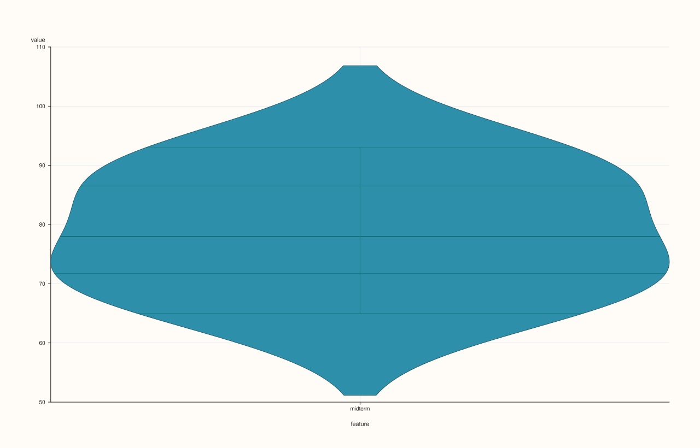

ThreadPlotAccessor::violin¶
Back to ThreadPlotAccessor API Reference
Signatures¶
ThreadPlotAccessor::violin(const ViolinPlotOptions& options = {}) const -> pluss::pl::Studio
ThreadPlotAccessor::violin(const Thread& group) const -> pluss::pl::Studio
ThreadPlotAccessor::violin(const Thread& group, const ViolinPlotOptions& options) const -> pluss::pl::Studio
What It Does¶
Two modes, chosen by which overload is called:
Single-violin mode (
violin(options)): draws one violin for the bound thread’s own distribution — the single-series specialization ofDataFramePlotAccessor::violin’s feature-list mode, always with exactly one feature (there is no multi-feature form here, since aThreadis always one series).Value/group mode (
violin(group[, options])): splits the bound thread’s values into one violin per distinct value of a companiongroupthread — the single-series specialization of the 2D accessor’sviolin(value_feature, group_feature[, options])overload.
Important
group accepts a numeric Thread too, unlike scatter()’s hue
Exactly like DataFramePlotAccessor::violin’s
value/group mode, a numeric group thread isn’t rejected — its raw distinct values become
violin group positions directly, rather than being cast to text. See that page’s important
callout for why this is rarely what’s wanted unless the numeric column really is a
small-cardinality code.
Parameters¶
group (const Thread&, value/group mode)
The companion thread defining violin groups — text-like or numeric, see the important
callout above. Must match the bound thread’s size, or the call throws
"Thread::plot: thread size mismatch".
options (ViolinPlotOptions)
The identical struct documented on
DataFramePlotAccessor::violin
(alpha, line_width, width, bw_adjust, cut, scale, inner, side).
Returns¶
pluss::pl::Studio
A figure with one pane containing a single violin (single-violin mode) or one violin
per distinct group value (value/group mode).
Examples¶
Example 1. Single-violin mode, default options.
using namespace pluss::table;
auto midterm = Thread(pluss::make_series({71.0, 82.0, 93.0, 65.0, 88.0, 74.0}));
midterm = midterm.name("midterm");
auto chart = midterm.plot().violin();
chart.show();

Example 2. Value/group mode with a text-like group thread.
auto score = Thread(pluss::make_series({71.0, 88.0, 79.0, 95.0, 60.0, 82.0}));
score = score.name("score");
auto section = Thread(pluss::make_note({"A", "A", "A", "B", "B", "B"}));
section = section.name("section");
auto chart = score.plot().violin(section);
chart.show();
Two violins are drawn — one for section "A"’s three scores, one for section "B"’s
three scores.

Example 3. An explicit ViolinPlotOptions, including a half-sided violin.
ViolinPlotOptions options;
options.side = pluss::pl::ViolinSide::Right;
options.bw_adjust = 0.8;
auto chart = score.plot().violin(section, options);
chart.show();

Notes¶
Single-violin mode always draws exactly one violin — there is no multi-feature form the way the 2D accessor’s feature-list mode has.
Value/group mode accepts a numeric
groupthread, unlikeThreadPlotAccessor::scatter’s stricterhue— see the important callout above.Returns a
pluss::pl::Studio— seeline()for how to view or save the result.
See Also¶
DataFramePlotAccessor::violin: the method both overloads delegate to.ThreadPlotAccessor::box: quartiles-and-whiskers only, the simpler sibling, with no value/group mode of its own.